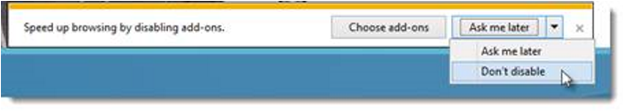
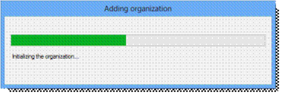

*Internet is required to complete the client setup. Without it, you will not get the latest updates to the setup tool and you may receive errors related to connectivity.
Key Step: It is important for you to verify your time and time zone are both correct on your Online Services clients. As many of the Online services are dependent on certificates, verifying your time settings will help ensure your session runs smoothly.
The following steps will need to be performed once on each of the 8-10 client devices.
After each device completes the client imaging process, they will each need to be configured based upon your CIE deployment scenario.
Each device should be sitting on the Administrator desktop with the CIE Client Setup Assistant app open. If it is not open, double-click on the CIE Client Setup icon residing on the desktop (for the local administrator account only).
The CIE Client Setup Assistant app will appear; select the Setup tile.
Select the Online Setup button.
Select the Commercial content pack from the drop-down menu.
Enter the name of the tenant you created for this CIE Client.
Select the persona you would like to use. (Example: Alan Steiner)
Click Begin Setup to start the client setup.
The configuration status will appear in the window.
Configuration will restart and automatically log you in to the client and leave you on the desktop.
Key Step: It is important to run Enabling CRM & SharePoint Integration before setting up the Dynamics CRM App on client machines.
Next, you will need to open Dynamics CRM from the All Apps menu.
Once open, you will need to enter the address for CRM online https://tenantname.crm.dynamics.com and click the Next arrow.
Select Work or School account, if prompted, and Enter in the credentials for the user (user@tenant.onmicrosoft.com and pass@word1) and click Sign in.

Wait a few minutes and you will see the CRM Home Screen, then you can close the Dynamics CRM App.
Click the Windows Key > Settings > System > Default Apps
Scroll to the bottom and click Set defaults by app
Select OneNote 2016 and click Set this program as default and OK. Close all open windows.
Open OneNote 2016 from the All apps menu and use the ESC key to close the Connect to the cloud dialog window.
Close OneNote.
Open Internet Explorer, choose Use recommended security and compatibility settings and click OK. If you are prompted, click Enable for the Skype for Business Browser Helper.
If prompted to disable add-ons, pull down the menu option to select Don't disable.

If prompted, type in the user name (for example, karenb@<yourtenantname>.onmicrosoft.com) and password (pass@word1). Check Keep me signed in and then click Sign in.
If prompted to save your password, click Yes.
Click on the second browser tab to go to https://www.yammer.com/login.
Enter the persona's username and password on the Yammer sign in page, select Remember me and allow the browser to remember the password.
Return to the Office 365 browser tab, click on OneDrive tile from the Office 365 App Switcher.
Click Next.
Click Sync above the document list.
Tap or click Sync now and then Sync Now again…
before finally tapping or clicking on Show my files…, which takes us to the desktop File Explorer.
Return to the Office 365 browser tab, click on Sites in the landing page menu and then Home.
Open the persona's About Me page by clicking on the persona's picture in the ribbon and clicking About Me.
If the picture does not populate in the header, click Edit Profile.
Click Change your photo.
Wait for the photo to populate on the Change Photo screen, then click Save and OK.
Click on Office 365 in the navigation menu to return to the Office 365 landing page.
Open Outlook 2016 from the Start menu or All apps menu. Outlook will automatically set up the persona's account and populate the inbox with all session emails.
Technical Consideration: If the Outlook account is not connected to the tenant, DLP policies used during the session will not be available on that client device.
Technical Consideration: If the tenant you created did not include CRM, you will get a series of prompts at the beginning of set up process for Outlook. You should cancel the CRM configuration process and proceed with the remaining client set up steps.
When Outlook 2016 is open, verify that it is connected to the online tenant by clicking on File > Office Account. Your persona name should be listed in Connected Services. If it is not, click Go online to connect the account to the tenant.
You can also delete the "You've logged in to Yammer" email or any additional mail that was generated in the tenant since the original provisioning.
Note: The CRM for Outlook plug-in is included in the client image and should automatically install after opening Outlook 2016. You may have to complete the wizard manually if it does not complete the automated installation steps.

Once the CRM organization connection is made, you may exit. This may take a few minutes to complete.
Finally, open Skype for Business 2016 from the Start menu or All apps menu so the persona images can populate and it will be available at the beginning of the session.
The device is now fully setup and ready for the CIE session.
Facilitation Note: If you are going to show EMS features during your Commercial CIE session, you should also enroll the device in Intune prior to the session. See Intune Guidance in the Appendix > Advanced Setup section for more details.
Important Note: The Internet Explorer browser should be left open and the device should not be shut down or restarted prior to the session. This will allow the device to retain the Yammer and SharePoint logins and make user experience smoother during the session.
The scenarios in the CIE Facilitation Guide are written using Internet Explorer 11 due to some limited functionality in Microsoft Edge. You can still showcase Microsoft Edge during your session, but it is recommended that you test those scenarios in advance.
Repeat the steps in this section on each client device.
O
nce complete, continue on to Windows Phone 8.1 device setup.